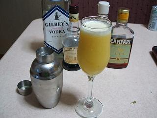

日々、想ふ
〜過去感じたことがつれづれと〜
（できるだけ最大化してお読みください）
日々、想ふ
今日は二度着替え。１０/３１
俺は新聞を取っていません。
そうすると自然とチラシを見る機会はないだろうと思われがちですが
ポストに直接入れてくるところもありちょくちょく目にします。
ピザのチラシとか寿司の出前のチラシとか。
確かに一人暮らしの人間にとって出前のチラシは
確かに効果的だと思います、俺は出前頼んだことないけど。
そんなところに一戸建てのチラシを入れるのはいかがなものか。
「特価３６８０万！」てどこが特価だよ。
たぶん俺の実家より高いぞ、タケユキです。
何日か前にネットでいろんなサイト見てたら
どこかのサイトで「鼻うがい」について言ってた。
やり方は簡単で、体温程度のぬるま湯をコップに入れて、
小さじ一杯程度、もしくはひとつまみくらいの塩を混ぜる。
それを片方の鼻に流し、口から出す。
片方をある程度やったら今度はもう一方の鼻に湯を流す。
これで鼻-口間の粘膜がきれいになるらしい。
実際にやってみた。
でもやっぱり最初は超大変。
ちょっと鼻に入れただけで「ふごっ！」ってなる。
けどがんばってやってみたら
詰まり気味だった鼻の通りがめっちゃよくなった。
あまり聞きなれないものですがこれは本当におすすめ。
季節の変わり目で体調崩し気味の人は試してみては。
でもこれ普段のうがいみたいに洗面台の前とかでやらない方がいいと思う。
鼻にだけ湯は１００％まず入らない、こぼれる。
うがいが終わる時には着てる服は塩水だらけ。
そんな状態が起きるので個人的にはお風呂に入ってる時がおすすめです。
・・鼻に湯を入れるのに精一杯で全然気づかなかった・・。
今日のバイト：・・やっぱりいつもどおり。
今日の家計簿：
| 支出計 |
忘れた円 |
| 収入計 |
たぶん０円 |
| 残金 |
来月分からきっちりつけます円 |
実力はそれの半分。１０/３０
今週の「データ構造とアルゴリズム」のミニレポート課題で
俺の答えを写した人、もしくは参考にした人、
あの答えことごとく間違ってるみたいです、
でも問題の捉え方によってはありみたいです、
だから俺は今回このまま出しとくつもりです、タケユキです。
昨日飲みやって帰ってきて朝になって起きたら１３時、
もうすでに朝じゃない。
それから着替えてうだうだしてたらバイトの時間、
休日のいつものパターンですよ、
いいんですかキャンパスライフがこんなので。
明日もバイトなんですけど、明後日もバイトなんですけど、
その次の日もバイトなんですけど。
まあ決まってることはどうこう言ってもしょうがなくて
もっと楽しいことを考えよう。
友達のホームページの日記を読んでたらボーリングの話をしてた。
そういえば当分ボーリングをやってない。
来月一回くらいは行きたいなあ。
でも来月はレポート地獄が待ってるみたいでたぶん無理だけど。
バイト帰ってきてから友達とレポートしてるときに
ボーリングの話になったんで今までのスコアシートを見せてみた。
「自分けっこううまいんやっけ〜？・・・
すげっ！スコア２００超えてるやん！」
うん、ごめんそれ２ゲームトータルのスコア。
今日のマリオテニス：ストレート勝ち。
今日の家計簿：
| 支出計 |
忘れた円 |
| 収入計 |
たぶん０円 |
| 残金 |
来月分からきっちりつけます円 |
一週間。１０/２９
昨日の飲みが夜遅くまであって朝起きたらもう８時過ぎ、
めんどくさいっていうか別に気にならなかったというか
寝るとき用のジャージで授業受けに学校行きました、
ええ別に失うものとか何もないですから、タケユキです。
酒飲んだら風邪治るもんだって話聞いてたから
昨日の飲みでちょっと飲んでみたんだけど
朝からめっさ頭痛、無理。
まあなんとか学校行ってバイト行ってから
今日は学科の友達と飲んでみた。
一度の酒じゃ無理でも２度３度といけばなんとか治るかもしれない。
そんなアホな考え方をしてるうちはまだまだ風邪は長引きそうです。
今日の飲み会：誰かに頭を足で踏まれた。
今日の家計簿：
| 支出計 |
忘れた円 |
| 収入計 |
たぶん０円 |
| 残金 |
来月分からきっちりつけます円 |
いろいろ。１０/２８
焼肉してます、飲んでます。
体調不良とか、風邪とかいってるけどそんなの言ってられません、
マリオテニス買ったけど、風邪とかそれどころじゃない。
今ちょうど１２時くらいだけどまだまだ飲みは終わらんて、タケユキでした。
今日のマリオテニス：コクッパがつええ。
今日の家計簿：
| 支出計 |
忘れた円 |
| 収入計 |
たぶん０円 |
| 残金 |
来月分からきっちりつけます円 |
イメージチェンジ。１０/２７
「君に伝えたい秘密がある、
だから、一緒に行かないか？」
とキムタクがスクリーンの中で言ってました、
ということで今日は映画「２０４６」見てきました、
というか映画館の中で寝ていました、
一緒に行った人ほとんど寝ててごめん、タケユキです。
今日は学校が一限で終わったので心斎橋に買い物へ。
冬服買おう買おうとしてたんだけど結局眼鏡買った。
てなわけで明日から眼鏡デビューです。
てめえら惚れるなよ？
今日の日記：ごめん宿題あってちょっと手抜き。
今日の家計簿：
| 支出計 |
忘れた円 |
| 収入計 |
たぶん０円 |
| 残金 |
来月分からきっちりつけます円 |
鼻水が止まらない２。１０/２６
梅田のレストランのバイトのスケジュール、
４時半に家を出て電車に乗り、５時半からバイト。
４時間半ちょっと働いて、まかないの晩ご飯食べて
１１時過ぎに帰りの電車、１２時ごろ帰宅で一日３６００円。
近所の塾講のバイトのスケジュール、
７時過ぎにチャリでバイト先へ、７時半から授業開始。
数学の基本的なことを教えて２時間半。
１０時に授業が終わって１０時半には帰宅で一日４０００円。
やっぱり割が合わないと思うんですけど、タケユキです。
風邪ひいてます、昨日同じマンションに住む友達に薬もらったんだけど
まだ鼻水止まりません、まるで俺の中のダムが決壊したかのごとく。
それは家の中でも学校でももちろん電車の中でも。
電車の中や梅田を鼻水たらしながら歩くわけにはいかない。
しかし手持ちのポケットティッシュは学校にいる間に使い果たした。
やばい、今日最大のピンチが襲う。
しかしそこは大都会梅田、
探せばどこかそこらへんでティッシュ配ってるだろう。
と思ってたら駅からバイト先までの約１０分の道のりの間に
過去最高記録３個のポケットティッシュをゲット。
いやあバイト先が都会でよかった。
そんなちっちゃな冒険があった一日、天気雨。
今日のティッシュ：LIFE CARDと武富士とアコム。
今日の家計簿：
| 支出計 |
忘れた円 |
| 収入計 |
たぶん０円 |
| 残金 |
来月分からきっちりつけます円 |
鼻水が止まらない。１０/２５
今週の木曜に
ドンキーコンガと
マリオテニスGCを買いに行きます。
今後家でテスト勉強は無理になりました、
↑となるように俺にドンキーコンガを買わせようとする人が
後を絶ちません、我が家はアトラクションパークですか、
今のとこマリオテニスGCしか買う予定はありません、
タケユキです。
今日は風邪でダウンです、先週からの風邪がひどくなってきました。
だれかお見舞い来てくれてもいいですよ？
ちょっとした料理とかカクテルくらいなら作ってもてなしますよ？
一緒に酒飲むのも付き合いますよ？
ってかそのくらいもてなせるなら俺の風邪はたいしたことないじゃん。
オチのキレがないのは体調不良を理由にしても罪はないと思います。
今日の三ツ矢サイダー：底をついた。
今日の家計簿：
| 支出計 |
忘れた円 |
| 収入計 |
たぶん０円 |
| 残金 |
来月分からきっちりつけます円 |
学祭シーズン到来。１０/２４
学祭、それは秋の代名詞。
衣替えを迎え、植物も赤みを帯び始めたこの季節。
学校という世界ではひとつの大きなイベント。
学祭、それは青春の代名詞。
サークルで、クラスで、力を合わせ店を出す。
作ったものが売れた喜び、計り知れない達成感。
学祭、それは出会いの代名詞。
恋の季節とも謳われる秋という季節。
知り合うきっかけが学祭の売り子とお客さん、
そういう状況ってのもけっこうありだと思います。
ってかあるそうです。
学祭、それは思い出の代名詞。
学生生活をするうえで欠かすことのできないイベント。
何もやらずして学生を語ることができるというのか。
他の大学の学祭だって参加してなんぼだ、
というわけで今日は武庫川
女子大（通称武庫女）の学祭に行ってきました、
女子大ですよ、女子大、タケユキです。
朝１０時に一緒に行く友達と待ち合わせ。
またバイクにまたがり１時間弱、目的地に到着。
門をくぐり、キャンパスの中へと足を踏み入れる。
まさに圧巻、視界に入る人の９５％が女の子。
うちの学部のまったく逆だ。
まあ別にナンパしに行ったわけじゃなくて
友達の彼女見に行っただけだけど。
あんまり大きい学祭じゃなくてあんまりすることなかったけど。
フランクフルトのケチャップがかばんに垂れて大変だったけど。
ただこの日あんまりお腹の調子がよろしくなくて
いつもと違いかなりトイレが近い状態だったんですね、
女子大で。
女子大で男がトイレを見つけるのがどれだけ大変だと思いますか。
全然大変じゃありませんでした、すぐ見つかりました。
今日の日記をそういうオチで終わらせようと思ってたのに
そんな親切にたくさん男子トイレ作ったりしないでください。
今日の大学：私立はやっぱりきれい。
今日の家計簿：
| 学祭で使ったお金 |
５００円くらい？ |
| 食料等 |
約８００円 |
| 支出計 |
忘れた円 |
| 収入計 |
たぶん０円 |
| 残金 |
来月分からきっちりつけます円 |
いやなお客。１０/２３
土曜日、晴れた休日、
こんな日はバイク日和。
バイクにまたがり中国自動車道を東へ。
途中新御堂へ進路を変え、なんばに向けて
時には１００ｋｍを超えるスピードで爆走。
車の合間をすり抜け我が物顔で梅田を走る。
家から３０分足らずでアメ村に到着。
バイクを止め、ヘルメットを脱ぎ、髪をかきあげるその姿、
これ以上ないくらいほど様になる、まさに男。
実際は俺は二輪の免許を持ってないんで後ろに載せてもらって
そのスピードのすごさにずっとびびってただけですけど。
後ろに座ってきょろきょろしてて
サイドミラー見る邪魔になってたねごめんよ、タケユキです。
てなわけで今日は友達のバイクに乗ってアメ村、堀江、なんばと行ってきました。
バイクむっちゃいい。渋滞の中もスイスイ進む。
レースゲームみたいだった。
ただ新御堂走ってる途中にいきなり
「やべえ、ガス欠だ！」
って言われたのはびびったけど。非常用タンクがついててよかった。
なんとかガソリンスタンド見つけて給油。
アメ村・堀江で買い物したあと
NGK行ってお土産コーナーの試食品を食べまくる。
生八橋、せんべい、まんじゅう、計１０種類以上を制覇。
用事も済んだしバイクだからってんで
今度は伊丹のダイヤモンドシティ(
ソレイユじゃない)に行った。
今度はそこでウインナー、ハンバーグ、パンなどご飯物を制覇。
食後に試飲コーナーでコーヒーを飲む。
１１時くらいに家を出たんだけど
食べ物でお金を使ったのはハーゲンダッツのアイスだけ。
今度はタッパーにでもご飯入れて行こうか。
近いうちにまた食べ放題行きたい（食べ放題？）。
今日の行動：デパートのブラックリストに載ってもおかしくない。
今日の家計簿：
| ハーゲンダッツのソフトクリーム |
３８０円 |
| 服 |
１１０２５円 |
| 支出計 |
１１４０５円 |
| 口座から引き出し |
１００００円 |
| 収入計 |
１００００円 |
| 残金 |
４００２円 |
俺が言われてもそんな目をする。１０/２２
ある女の子をデートに誘いました、
「なあ冬休み俺とディズニーランド行こうや」
即断られました。
夢の国、魔法の国、ディズニーランド。
そんなファンタジーの世界へ誘われていやな女の子なんているわけがない。
ディズニーランドの何が不満なんだ。
不満だったのはディズニーランドじゃなくて
一緒に行く相手が俺だということだったみたいですね。
でも俺は負けない、タケユキです。
今日サークルの友達にも言われたけど俺は最近病んでます。
まあ原因はもうほぼ１００％バイトなんだけど。
そういえば夏休みに
さんまが、
テンション下がってるときの事を「ズーン」って言ってた。
「いやなんかもう・・ズーンですよね」っていうような使い方をするらしい。
この「ズーン」を広めようとしてたのを今日思い出した。
今日は塾講のバイトの日。
ちょっと風邪気味ながら授業やってたら休憩中に
「どしたん先生声いつもと違うで？」
「いやちょっと風邪気味でねえ・・ズーンなんやって」
何言ってんだこいつ？って目で見られたけど俺は文句は言えない。
今日の言い訳：いつの時代もパイオニアというのはつらい立場にいるもの。
今日の家計簿：
| 「ブラックジャックによろしく」第１０巻 |
５６０円 |
| 浅田次郎「蒼穹の昴」１〜４巻 |
２３０４円 |
| 飲み会のお金 |
３００円 |
| 支出計 |
３１６４円 |
| 収入計 |
０円 |
| 残金 |
５７９７円 |
まだ青い。１０/２１
バイトありません、オフの日。
４限目が終われば家でのんびりできる、
バイトやらなんやらで忙しい＆ゆううつな日々が続いてたんだから
今日は昨日と同じでだらだらしてやる！
誰かにご飯誘われたって断ってだらだらしてやる！
チャラララララーン。メール受信。
「タケユキ君今日暇なん？
今日学校残らなあかんくなってん・・。
バイト代わってもらえないかなーと思ってんけどぉ・・」
関西弁の女の子ってそれだけで武器ですよね、タケユキです。
てなわけでオフの日が打って変わってバイトの日に。
バイト入りたくねえって何回も言ってるのに
結局ここ１週間で五日バイト行ってんじゃん。
でも代わりにバイト行ったわけだけど
今日はそんな忙しくなかった。
ピークの時間帯もそんなに忙しくなく
残るお客は一組のみ。
そんな時はもうあとは片付けくらいしかやることがない。
でもまだお客さんいるし片付けていいものと
まだ置いとかないといけないものを見極めないといけません。
ここからがバイトの経験がものをいう。
もう料理も頼みそうじゃないしお皿とか片付けていこうか。
この判断はそう難しいもんじゃない。
誰でもなんとなく見てたらわかるもんだ。
もう飲み物頼みそうじゃないし、氷とか片付けていこうか。
この判断はなかなか難しい。
だが俺はもうこのバイトを始めてはや１０ヶ月強。
その俺にとってはこの判断はそんなやっかいなもんじゃない。
お客さんの間に流れてる空気を読んで３秒・・
「よし片付けよう」
経験からくる判断ってのはなかなか身につきにくいもの。
まあ俺くらいになれば楽勝なんだけどね。
ドリンクコーナーを全部片付けてあとはお客の帰りを待つのみ。
お客さんがこっちを向いた、会計済ませる気かな？
「すいませーん、焼酎お湯割りで」
あれー？
今日のバイト：代わってあげたことは後悔してないですよ。
| 支出計 |
１６６９円 |
| 収入計 |
０円 |
| 残金 |
８９６１円 |
不満のはけ口。１０/２０
昨日バイト先の店長に頼まれてバイト入る前に
ヨドバシカメラにおつかい行ってきました。
頼まれたのはプリンタ用のインク、ファックス用のインク。
俺がいくら仕事のできない人間とはいえおつかいくらいはできます。
お店に入ってまずは一階のプリンタインクのコーナーへ。
一通りインクを見たけど頼まれたインクが見当たらない。
探し方が悪かったのかもと思い２，３度また探してみるも、
やっぱり見つからない。
こういう時にこそ店員がいるのだと近くにいた店員さんに
インク探してるんですけどって言ったら
「お探しのインクは地下１階の売り場にございます」
ああそうか、大きいお店だからインクも２箇所に置いてあんのね。
エスカレーターで地下におり、地下のインクコーナーへ。
・・・・・・・・・・・・。
ここでも一通りインクを見たけどやっぱり探してるインクが見当たらない。
また近くの店員さんに探してるインクのことを話すと、
「お探しのインクはここをまっすぐ行った奥の売り場にございます」
・・・・・・・・・・・・。
インクコーナーを何箇所も作るのは別にいいと思うよ、広い売り場だし。
でも一つのコーナーに商品は一式揃えとけや
それとも俺が探してるインクはめちゃくちゃマイナーだったんですか、タケユキです。
台風２３号上陸してるみたいですね。
朝外に出てると学校休校だって断言できるほど雨は強くなく微妙な天気。
分からん時は聞けばいい、てなわけで一般教養の事務センターに電話。
前に電話した時応対してくれた人はけっこういい感じだったのに
今回はなんかひどかった。
「今日って学校は休みになるんですかね？」
「朝６時の時点で警報が出てたら休みになります」（無愛想）
この時点でちょっとムカッときた。
俺は休みになる基準聞いたわけじゃねえっての。
しかもなんか言い方がめんどくせって感じだった。
でもここで俺はひるまない。
「今日警報は出てるんですかねー？」
「６時に警報が出ていないので午前は授業あります」（無愛想）
「どうもー」
いろんなとこからたくさん問い合わせの電話かかってきて
めんどくさいのは分かるけどそんな遠まわしの言い方せんでいいじゃんよ。
「今日って学校は休みになるんですかね？」
「警報が出てないから授業あるよー」
こうさっさと答えてくれたら話す手間も時間も半分ですむのに。
結局授業は午前だけで午後からは休校に。
バイトもない、外出することもない、
勉強しようと思ったけど結局１秒もやってない。
今日あと６時間、何して過ごそう。
今日のストック：野菜生活はあと１本
今日の家計簿：
| なし |
０円 |
| 支出計 |
０円 |
| 収入計 |
０円 |
| 残金 |
１０６７０円 |
深夜の訪問者。１０/１９
バイト早くあがれたんで家帰ってテレビつけたら
日本シリーズやってました。
今年日本シリーズの中継をテレビで見るのは今日が初めて。
中日のユニフォームについてる「CHUNICHI」の文字、
「
CHU NI CHI」と読まずに
「
CHU N I CHI」
と読んでしまったのは
俺だけじゃないはずです、タケユキです。
台風が近づいてるせいか雨、風ともに強く、
学校行くのを躊躇せざるを得ない一日でした。
学校には行ったんですよ？
・・昼からですけど（火曜は１〜４限まで全部詰まってる）。
でも言い訳だけさせてもらえるなら言うけど
俺は昨日は一限から学校行くために
夜遅くにバイトから帰ってきてすぐ寝たんです、夜の一時くらいに。
そしたらなぜか一時半くらいに目が覚めたのよ。
横に何か光ってる物があんのね、よく見たらケータイ。
なんで光ってんだろって思った、よく見たら新着メール受信。
うつろな意識の中ケータイを手に取るとそこには同じ学科の友達の名前。
メールを開くとそこにあった文章は、
「今から行く」
冗談だと思ってたら、ほんとに来た、夜の２時に。
こんな時間に来るってのはなんかよほどの事件でもあったんだろうと、
少なくとも何かあったと思うのが普通です。
聞いてみると、
「いや昨日寝すぎて今日は夜寝れんと思ったからきた」
俺はお前の暇つぶし用のおもちゃか何かか？
おまえが寝れんでも俺はしっかり寝れると思うんですけど？
まあ俺は部屋に人がおろうとおるまいと寝れる人間なんで
いつものごとくほっといて寝ようとしたら今日は空腹のせいかなぜか寝れず。
それでビデオに録ってたドラマ見たり、
最近集め始めたディズニーDVD「ライオンキング２」見てうだうだしてたら
寝るときすでに朝の５時半。
目覚ましテレビを見ながら寝るなんて今まで聞いたこともない。
よし、今度から寝るときはメールの着信音は消しとこう。
今日の他の人にも言いたい：来るなとは言わん、せめてもうちょっと早めに言って。
今はまだ眠ってる。１０/１８
働きたくねえ、だから働きたくないんだって、
それなのにやっぱりバイト行かないといかんのだよね、タケユキです。
それだけのせいにするのはどうかとは思うけど
やる気出ません、学校行く気になりません、授業受ける気になりません。
今期はまじめにがんばるはずだったのに。
やっぱり２週間しかもたないしょぼい決意だったみたいです。
「明日からがんばる」
「ぜったい明日からがんばるって」
自分で言うのもなんだけど言い飽きた。
そろそろ根本から直さねばいけない時が来たのかもしれません。
もっと自分を見つめなおす時が来たのかもしれません。
明日からがんばるって言ってすぐがんばれるような
そんな早熟な人間じゃないみたいです。
どちらかというとじっくりじっくりいって
最後のほうにど〜んとくるみたいな、
俺はおそらくそういう大器晩成型な人間なんです。
ケンタッキーフライドチキンが世に広まっていったのは
カーネルサンダースが６５歳の時。
俺もたぶん彼のような大器晩成型の人間。
今はまだ秘められた力を眠らせたままの状態。
その時が来れば俺だってフライドチキンくらい世に広められる。
あれ？なんか話がずれた気がするので今日の更新はこれでおしまい。
今日のこれからの予定：バイト・・行ってきます。
〜今日の家計簿〜
| 定期代 |
３０７０円 |
| 「KATSU!」14巻 |
４１０円 |
| 食料等 |
４９２円 |
| 教科書代 |
６９６７円 |
| バイト行って終わった後のお茶代 |
６３０円 |
| 支出計 |
１１５６９円 |
| 収入計 |
０円 |
| 残金 |
１０６７０円 |
基本的には一生に一度。１０/１７
俺は梅田に電車でバイトに通っています。
そこそこな日数バイトいくもんで定期券買っていってます、
いつまで続けるかわからんもんで一ヶ月単位で買ってます。
前回買った定期が今日付けで切れるのはわかってました。
明日またバイトあるから明日定期買えばいいやと思って
今日はそんなにお金を持たずに出発、
しかし思ってた以上にバイトが長引いて
帰りは終電０：２５分発の電車。
終電０：２５分発の電車・・。
日付け変わってるーーーーーー・・・・・。
しかしその場で定期買うだけのお金がなく
わざわざ２２０円払って切符買って乗車。
どうせまたこの日から定期で電車に乗れるはずなのに・・。
２２０円損しました、２２０円ですよ？
ジャンプが１冊買えるのに、タケユキです。
というわけで今日バイトでした。
土日にバイトって出てきたら結婚式の宴会のバイトの話です。
今日の宴会は３本、なんだかんだで毎週だれか結婚してんのね。
宴会の規模がけっこう大きく忙しかったんだけど
宴会自体は２３時過ぎに終了、お客さんみんな出てって
片付けやってる時に新婦さんがやってきて
「今日はありがとうございました」
そう言ってくれた。
喜んでくれたならがんばったかいもあるってもんだ。
ストレスたまっていやなんだけど接客のバイトってのは
こういういい体験もできるのがいいところ。
って思えるあなたは心がきれい。
俺は早く帰りたいって思ってた。
とまあ軽く自己満足にひたりながら片付け続けてたら
店長と新婦さんの話し声が聞こえてきた。
「今日はありがとうございました」
「いえいえこちらこそありがとうございました」
「またお願いしますね」
おまえはもう離婚を考えてるのか。
今日のテスト：俺は行くだけ行った。
今日の家計簿：
| 電車賃 |
１２８０円 |
| 昼飯 |
４５０円 |
| 計 |
１７３０円 |
せめてサラミとかだったら。１０/１６
なんかテンション下がってます、ってか軽く鬱状態、タケユキです。
働きたくねえ、働きたくねえ。
でもそういう日に限ってやっぱりバイトはあるもので。
サボるほど度胸もなく、あきらめてバイトがんばるっていう前向きな明るさもなく、
ザキングオブダメ人間みたいなオーラだしながらバイト行ってきました。
怒られながら「ああやっぱおれダメ人間だぁ」思いながら働いて、
家に戻ってきて一息ついてるところです。
そういうテンションのあがらない一日だったからこそ飲んで忘れよう。
シェーカーに氷を入れ、
ウォッカを分量を量って入れた後にオレンジジュースを入れる。
シェイク、シェイク、シェイク。
グラスに注ぎ、低い声で
「スクリュードライバーになります」

クールな自分に酔いしれ、そして酒にも酔いしれる。
これがグローバルな男のせつない夜の過ごし方。
一緒に食べるつまみがさきいかの時点でグローバルもなにもあったものか。
今日の一言：明日もバイト・・・